인쇄기사 (2003-08-10 기출문제)
1과목: 인쇄공학
1. 안전관리자의 직무가 아닌 것은?
- 안전기획의 수립과 시행
- 안전교육과 훈련
- 재해의 조사분석과 시정책 수립
- 안전에 대한 결과의 심의
(정답률: 알수없음)

2. 다음중에서 변색 및 퇴색(discoloration and fading)의 주요 요인과 가장 거리가 먼 것은?
- 빛(햇빛, UV램프)
- 열(상온 이상의 고열)
- 화학물질(유기용제, 산, 알칼리)
- 밀폐된 보관
(정답률: 알수없음)
3. 교반하거나 힘을 가하면 유동성이 좋게 되고 정지해 두면 유동성이 나쁘게 되는 성질은?
- 틱소트로피
- 플로우
- 항복가
- 레올로지
(정답률: 알수없음)
4. 인쇄공정에서 정전기 방지대책으로 가장 적당한 것은?
- 마찰에 의해 대전되는 용지에 남아있는 전하의 비율을 높인다.
- 인쇄기계에서 마찰이 많은 롤러 등의 재질을 다르게 하여 이중층 전위차를 높인다.
- 급격한 방전을 억제하기 위하여 인쇄 기계의 속도를 높인다.
- 실내의 온도와 습도를 적당히 조절하여 전하의 축적을 막는다.
(정답률: 알수없음)
5. 트루롤링법(true rolling method)에 대한 설명이 맞는 것은?
- 판통보다 블랭킷통의 직경을 크게 한 것이다.
- 판통보다 블랭킷통의 직경을 작게 한 것이다.
- 판통과 블랭킷통의 직경을 동일하게 한 것이다.
- 판통과 블랭킷통의 직경은 크게 중요하지 않으므로 무시한 것이다.
(정답률: 알수없음)
6. 금속 표면과 기름의 접촉각이 다음과 같을 때 친유성 성질이 가장 큰 것은?
- 30°
- 45°
- 60°
- 80°
(정답률: 알수없음)
7. 인쇄 잉크에서 전이계수(V)는? (단, r = 잉크 전이율)
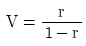
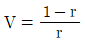
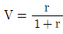
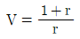
(정답률: 알수없음)
8. 롤러, 피인쇄체 등 여러 가지 재질의 사이에 잉크를 고루묻혀 놓고, 두 개의 재질을 순간적으로 뗄 때, 잉크 필름이 분열하는데 필요한 총 에너지 또는 잉크 자신이 외력에 대하여 저항하는 힘을 무엇이라고 하는가?
- 점성계수
- 탄성계수
- 점탄성계수
- 택(tack)
(정답률: 알수없음)
9. 인쇄물이 화학적 또는 물리적으로 완전히 건조되어 잉크가 고체화 되고 피인쇄체에 접착된 상태로 된 것을 무엇이라 하는가?
- set off(셋오프)
- setting(셋팅)
- hardening(하드닝)
- cold set(콜드셋)
(정답률: 알수없음)
10. 인쇄물의 주관적인 평가 방법 중 평가 결과의 반복성과 재현성을 보기 위한 계수는?
- 상관계수
- 주관계수
- 인쇄적성계수
- 충실계수
(정답률: 알수없음)
11. 겨울철 저온에서 인쇄실의 습도가 30% 이내로 낮아질 때 가장 먼저 예측되는 인쇄물의 불량현상은?
- 망점의 찌그러짐(distortion)
- 잉크와 습수의 섞임(emulsion)
- 건조의 지연(slow drying)
- 정전기의 발생
(정답률: 알수없음)
12. 다음 중 인쇄물의 양면을 한번에 코팅할 필요가 있을 때 코팅 용액에 적셔서 프레스 롤 사이를 통과시켜 코팅하는 방법은?
- 롤 코팅
- 그라비어 코팅
- 딥 코팅
- 익스트루죤 코팅
(정답률: 알수없음)
13. 인쇄기계의 가동 중에 종이의 스티프니스(stiffness)가 너무 낮으면 주로 어떤 현상이 발생하는가?
- 주름이 생기기 쉽다.
- 모틀링이 생긴다.
- 히키가 발생한다.
- 뒤비침이 발생한다.
(정답률: 알수없음)
14. 평활한 고체 표면의 접촉각 측정 방법이 아닌 것은?
- 투영법
- 경판법
- 광반사법
- 액체증발법
(정답률: 알수없음)
15. 잉크나 물 등이 피인쇄체에 묻을 때 일어나는 젖음은?
- 확장젖음
- 침적젖음
- 침투젖음
- 부착젖음
(정답률: 알수없음)
16. 인쇄작업시 작업자의 복장에서 잘못된 점은?
- 수건이나 걸레는 항상 허리에 차고 작업을 한다.
- 작업복, 셔츠 등의 소매끝이 늘어져 있지 않도록 한다.
- 바지는 무릅이 굽히기가 쉬운, 옷단이 가는 것이 좋다.
- 작업화는 속이 미끄러지지 않는 내유성의 것으로 한다.
(정답률: 알수없음)
17. 인쇄면에 도넛 모양의 작은 흰테 얼룩으로 인쇄판에 이물질이 붙어서 일어나는 현상은?
- 트래핑
- 히키
- 스커밍
- 블라인딩
(정답률: 알수없음)
18. 종이의 특성을 나타내는 용어가 아닌 것은?
- 백색도
- 평활도
- 틱소트로피
- 불투명도
(정답률: 알수없음)
19. 면지 양식에 없는 것은?
- 바름 면지
- 감음 면지
- 이음 면지
- 끼움 면지
(정답률: 알수없음)
20. 비닐 플래스틱졸 등이 속하는 유동과 가장 관계있는 것은?
- 뉴톤성 유동(Newtonian flow)
- 의소성 유동(Pseudoplastic flow)
- 딜라턴트 유동(Dilatant flow)
- 소성 유동(Plastic flow)
(정답률: 알수없음)
2과목: 인쇄재료학
21. 잉크 건조시 산소에 의하여 중합촉진을 하는 대신에 건조 장치내의 열이 비히클이나 수지를 중합(방향족 아민류)시키는 것에 의해 건조하는 잉크는?
- 촉매잉크
- 히트세트잉크
- 퀵세트잉크
- 그라비어잉크
(정답률: 알수없음)
22. 다음 용지 중 일반적으로 세로결, 가로결 구분이 없는 종이는?
- 한지
- 아트지
- 중질지
- 신문용지
(정답률: 알수없음)
23. 종이의 휨 강도(Stiffness)를 증가시키는 방법 중 가장 옳은 것은?
- 전료(Filler)의 함량을 증가시킨다.
- 평량이 일정하면 두께를 증가시킨다.
- Wet Pressing을 감소시킨다.
- Calendering을 증가시킨다.
(정답률: 알수없음)
24. 인쇄잉크가 갖추어야 할 기능이 아닌 것은?
- 인쇄기 상에서 응집력을 가질 것
- 목적에 따라서 시간 내에 건조할 것
- 인쇄물 요구에 적합할 것
- 인쇄물의 용도에 따르는 내성을 갖출 것
(정답률: 알수없음)
25. 종이로 전이되는 인쇄잉크의 전이율에 대한 설명 중 맞는 것은?
- 전이율은 인쇄속도에 비례한다.
- 전이율은 인쇄압력에 비례한다.
- 전이율은 인쇄속도와 점도에 비례한다.
- 전이율은 고정화 잉크량과 평활도에 비례한다.
(정답률: 알수없음)
26. UV 경화형 잉크의 장점과 가장 거리가 먼 것은?
- 용제를 사용하지 않음
- 냄새가 적게 남
- 광택이 양호함
- 순간적으로 건조됨
(정답률: 알수없음)
27. 오프셋 평판 인쇄기계에서 인쇄잉크 고무롤러(gum roller)의 특성이라고 볼 수 없는 것은?
- 합성수지 고무제품이어야 한다.
- 잉크전이가 용이해야 한다.
- 내유성,내용제성,내마모성이어야 한다.
- 롤러 고무경도가 사용목적에 따라 적합해야 한다.
(정답률: 알수없음)
28. 다음 중 종이의 전지 규격(mm)이 맞게 짝지어진 것은?
- 국판 788x1091, 4x6판 889x1194
- 국판 636x939, 4x6판 788x1091
- 국판 889x1194, 4x6판 636x939
- 국판 889x1194, 4x6판 788x1091
(정답률: 알수없음)
29. 인쇄 잉크용 유기안료와 무기안료의 특성을 설명한 것 중 틀린 것은?
- 유기안료보다 무기안료의 색이 선명하다.
- 유기안료보다 무기안료가 내광성이 우수하다.
- 무기안료보다 유기안료는 내열성이 약하다.
- 무기안료보다 유기안료가 흡유량이 많다.
(정답률: 알수없음)
30. 펄프공장에서 생산한 펄프를 종이의 용도에 맞게 섬유의 형태나 구조를 변화시켜 강도 및 투기도 등을 조절하는 공정은?
- 펄핑공정(pulping process)
- 고해공정(beating process)
- 스크린공정(screening process)
- 프레스공정(pressing process)
(정답률: 알수없음)
31. 종이의 백색도, 불투명도, 광택도, 평활성 등 인쇄적성을 향상시키기 위해 사용되는 첨가제는?
- 보류제
- 사이즈제
- 염료
- 충진제
(정답률: 알수없음)
32. 안료의 흡유량의 정의는?
- 안료 100g이 일정 유동도의 Paste상태로 되는데 필요한 기름의 g수
- 안료 10g이 일정 유동도의 Paste상태로 되는데 필요한 기름의 g수
- 안료 1g이 일정 유동도의 Paste상태로 되는데 필요한 기름의 g수
- 안료 0.1g이 일정 유동도의 Paste상태로 되는데 필요한 기름의 g수
(정답률: 알수없음)
33. 다음 중 잉크 표면을 건조시키는 강력한 건조제는?
- 코발트
- 망간
- 납
- 금속비누
(정답률: 알수없음)
34. 환경보호에 의하여 점차 종이의 재활용이 증대되는 추세이다. 고지의 재생 회수에 따라 증가하는 종이의 강도는?
- 인열강도
- 열단장
- 내절강도
- 파열강도
(정답률: 알수없음)
35. 오프셋 인쇄에서 사용되는 블랭킷(blanket)의 필요한 조건으로 맞지 않는 것은?
- 내유성이 우수해야 한다.
- 수분의 전이성이 좋아야 한다.
- 탄성 복원율이 좋아야 한다.
- 내점착성이 좋아야 한다.
(정답률: 알수없음)
36. 축임물의 역할에 대한 설명 중 틀린 것은?
- 비화선부를 깨끗이 한다.
- 판면의 온도를 높인다.
- 비화선부에 잉크가 묻지 않게 한다.
- 화선부의 변화를 방지한다.
(정답률: 알수없음)
37. 일정한 압력(1㎏/cm2)과 진공도(약 370mmHg)에서 공기 10㎖가 종이 표면과 유리판 표면을 통과하는 시간(sec) 으로써 측정하는 것은?
- 종이의 강도
- 종이의 기공도
- 종이의 평활도
- 종이의 산성도
(정답률: 알수없음)
38. 다음 펄프 중 종류가 다른 것은?
- 쇄목펄프(GP)
- 리파이너펄프(RGP)
- 열기계펄프(TMP)
- 크라프트펄프(KP)
(정답률: 알수없음)
39. 코우트지 제조시 사용되는 안료의 접착제(binder)가 아닌 것은?
- 탄산칼슘
- 전분
- 카제인
- PVA
(정답률: 알수없음)
40. 잉크 원료 중 알루미늄 킬레이트(Al-chelate), 벤토나이트(bentonite) 등은 주로 어떤 성질을 부여하기 위해 사용하는가?
- 잉크에 활성을 주어 내마찰성을 향상시킨다.
- 잉크의 건조피막의 형성을 촉진한다.
- 안료에 흡착하여 미립화하고 분산상태를 안정화 시킨다.
- 증점화, 세트 및 건조시간의 단축, 망점 재현의 개선 등에 사용한다.
(정답률: 알수없음)
3과목: 특수인쇄학
41. 플렉소 인쇄기의 표준형으로 각 유닛트에 독립된 압통이 수직으로 배열되어 건조장치 및 설치면적이 적게 드는 인쇄기 형식은?
- 드럼형
- 스톡형
- 인라인형
- 인와인드형
(정답률: 알수없음)
42. 그라비어 제판법에서 도금 전처리는 더러움의 종류에 따라 여러가지 방법으로 나눌 수 있는데 용제, 유제 및 알칼리 탈지 등의 예비 세척에서 제거되지 않고 남아있는 더러움을 완전히 제거하기 위한 마무리 탈지용으로 주로 사용하는 것은?
- pH 탈지법
- 전해 탈지법
- 유화 탈지법
- 용제 탈지법
(정답률: 알수없음)
43. EB 주사장치의 일반적인 구성 장치가 아닌 것은?
- 가속기
- 주사로
- 반송장치
- 냉각장치
(정답률: 알수없음)
44. 플렉소 인쇄기에 장착된 아닐록스 롤러(anilox roller)를 셀의 모양에 따라 분류할 때 소량의 잉크 공급에 적합하며 가장 많이 사용되는 형태는?
- 피라미드형
- 구갑형
- 사선형
- 격자형
(정답률: 알수없음)
45. 특수가공 폼 용지에 속하지 않는 것은?
- 접착형 폼 용지
- NIP 폼 용지
- 사진 폼 용지
- 카드 폼 용지
(정답률: 알수없음)
46. 지기인쇄의 특징이 아닌 것은?
- 폐기처리 및 재생이 쉽다.
- 대량생산이 가능하다.
- 다른 종류의 재료와 복합화가 불가능하다.
- 상품 보호성질을 가지고 있다.
(정답률: 알수없음)
47. 유리인쇄에 대한 설명 중 옳지 않은 것은?
- 잉크는 유리질 안료와 스퀴지오일로 구성되어 있다.
- 속건성 잉크로서 피막의 고착성이 좋다.
- 유리 표면에 직접 인쇄하여 800℃이상에서 소성한다.
- 스크린인쇄기는 평면 또는 곡면 인쇄기를 사용한다.
(정답률: 알수없음)
48. 오목점의 면적이 동일하나 원고의 농담에 따라서 깊이를 다르게 하여, 잉크량의 변화에 따라 농담 재현을 하는 그라비어 인쇄방식은?
- Halftone gravure
- Dultgene gravure
- Hard-dot gravure
- Conventional gravure
(정답률: 알수없음)
49. 1개 또는 4개의 분사구에서 잉크를 컴퓨터 제어로 단속적으로 뿜어내어 대상물의 표면에 압력을 주거나 접촉을 하지 않고 화상을 형성시키는 인쇄 방식은?
- 정전스크린 인쇄
- 정전평판 인쇄
- 잉크제트 인쇄
- 전자사진식 인쇄
(정답률: 알수없음)
50. 폴리스티렌, ABS, AS 수지의 인쇄시 불량 인쇄물의 상태를 없애고 재질을 재사용 하려고 할 때 사용하는 약품은?
- 부틸셀로솔브
- 디아세톤알콜
- 니트로벤젠
- 염산
(정답률: 알수없음)
51. 스퀴지의 선택기준과 가장 관계가 없는 것은?
- 스퀴지의 색상
- 스퀴지의 경도
- 스퀴지의 형태
- 스퀴지의 크기와 두께
(정답률: 알수없음)
52. IC(집적회로), LSI(대규모 집적회로) 등의 제조에 많이 사용되는 방법은?
- 마이크로 리소그래피(micro lithography)법
- 포토 일렉트로포밍(photo electroforming)법
- 포토 에칭(photoetching)법
- 서브트렉티브(subtractive)법
(정답률: 알수없음)
53. 입체인쇄에서 입체표시 기술인 다방향 화상법의 종류와 관계있는 것은?
- 입체거울법
- 렌티큘러법
- 2색필터법
- 편광필터법
(정답률: 알수없음)
54. 일반적으로 평판 인쇄한 화상에 스크린 인쇄 방식으로 마이크로 캡슐을 겹쳐서 덧인쇄함으로써 인쇄물의 후각 효과를 증대할 수 있는 것은?
- 금속 인쇄
- PCB 인쇄
- 향료 인쇄
- 패드 인쇄
(정답률: 알수없음)
55. 기존의 잉크와는 달리 전자잉크를 사용하며 전자 액체 잉크가 전이 단계에서 반고체 덩어리로 전환되고 다시 제거 단계에서 액체로 전환되므로서 100% 전이가 가능한 인쇄방식은?
- embossing printing
- digital printing
- liquid crystal printing
- stereoscopic printing
(정답률: 알수없음)
56. 플렉소 인쇄 중 판통에 잉크를 공급하기 위해서 사용하는 롤러는?
- 잉크 묻힘 롤러
- 전이 롤러
- 브러쉬
- 아닐록스 롤러
(정답률: 알수없음)
57. 스크린 감광액의 구비조건과 관계 없는 것은?
- 스크린사에 대한 접착성이 강해야 한다.
- 원고의 종류에 관계없이 피막두께가 일정해야 한다.
- 화선이 잘 빠지고 선명하게 현상되어야 한다.
- 온도, 습도에 안전해야 한다.
(정답률: 알수없음)
58. 정전인쇄 방식에서 디맨드 플로우(demand flow)란?
- 불필요한 부분에 잉크를 차단 하는 것
- 필요한 부분에만 잉크집의 노즐에 잉크 방울을 형성 시키는 방법
- 종이 면에 점 형태로 문자를 형성하는 방법
- 점의 규칙적인 배열
(정답률: 알수없음)
59. 그라비어 인쇄에서 적합한 잉크를 선정하기 위해 고려해야 할 사항이라고 볼 수 없는 것은?
- 인쇄 소재
- 가공 조건
- 급지 방법
- 용도
(정답률: 알수없음)
60. 다음 망사 중에서 가장 개방구(mesh opening)가 큰 망사는?
- 50메시
- 100메시
- 150메시
- 200메시
(정답률: 알수없음)
4과목: 인쇄색채학
61. 가시광선의 파장영역에서 시감도가 최대인 값을 갖는 파장은?
- 455㎚
- 555㎚
- 655㎚
- 755㎚
(정답률: 알수없음)
62. 보색관계가 아닌 것은?
- 황(Yellow) - 청자(Blue)
- 청(Cyan) - 적(Red)
- 황(Yellow) - 녹(Green)
- 적자(Magenta) - 녹(Green)
(정답률: 알수없음)
63. 다음의 가산혼합 방정식 중 옳은 것은? (Y:yellow, M:magenta, C:cyan, B:blue, G:green, R:red, W:white)
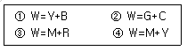
- ①
- ②
- ③
- ④
(정답률: 알수없음)
64. 어떤 색의 CIE 표색값(x, y, Y)이 (0.15, 0.20, 16)이면, 이 색의 X자극값은 얼마인가?
- 15
- 12
- 2.4
- 1.5
(정답률: 알수없음)
65. 아래 그래프에서 먼셀명도(Munsell Value) V와 시감반사율(視感反射率) Y(%)의 관계를 바르게 나타낸 것은?
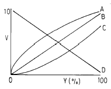
- A
- B
- C
- D
(정답률: 알수없음)
66. 시간적인 차이를 두어 두가지 색을 차례로 볼 때 생기는 색대비 현상은?
- 동시대비
- 계시대비
- 동화대비
- 연변대비
(정답률: 알수없음)
67. CIE 표준광원의 세가지 규정에 대한 설명 중 관계가 먼 것은?
- 표준광원A: 가스가 들어 있는 텅스텐 전구광을 대표하는 광원, 색도 x=0.4476, y=0.4075
- 표준광원B: 태양직사광의 분광분포에 가까운 광원
- 표준광원C: 맑은 하늘의 반사광을 포함하는 낮광선에 가까운 분광분포를 가지는 광선
- 표준광 B와 C는 태양의 직접광과 주광을 전형으로 그 범위는 400㎚에서 1000㎚까지 만을 나타낸다.
(정답률: 알수없음)
68. 뉴톤(Newton)이 프리즘을 통하여 스펙트럼을 발견할 때 사용한 색광(色光)은?
- 청색광
- 적색광
- 황색광
- 백색광
(정답률: 알수없음)
69. 다음은 여러가지 광원의 분광분포를 나타낸 것이다. 마젠타색(Magenta)과 빨강색(Red)의 분광반사율과 같은 조건등색이 될 수 있는 광원은?
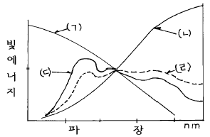
- (ㄱ)
- (ㄴ)
- (ㄷ)
- (ㄹ)
(정답률: 알수없음)
70. 색의 3속성에 속하지 않는 것은?
- 색채를 구별하기 위해 필요한 색채의 명칭
- 색상거리를 균등하게 분배한 색채 질서
- 색채의 밝기를 나타낸 성질
- 색의 순수한 정도
(정답률: 알수없음)
71. 다음 그림은 가법혼색과 감법혼색의 3원색 관계를 나타낸 그림이다. ①과 ②에 알맞는 색상은?
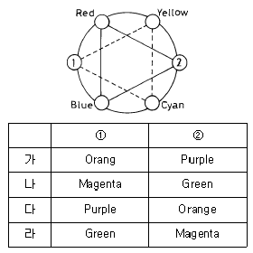
- 가
- 나
- 다
- 라
(정답률: 알수없음)
72. 다음 색상 중 단일색은?
- 파랑
- 회색
- 흰색
- 검정
(정답률: 알수없음)
73. 각기 다른 스펙트럼 합성의 색자극이 똑같은 색감각을 일으키는 현상을 무엇이라고 하는가?
- 잔상 현상
- 메타메리즘 현상
- 보색 현상
- 푸르킨예 현상
(정답률: 알수없음)
74. 색상의 강약에 대한 시지각적인 특성을 말하는 것은?
- 색상
- 명도
- 채도
- 색입체
(정답률: 알수없음)
75. 색을 표현하는 표색법에서 먼셀 표색계에 기준해 표시하는 수단으로 2GY 7/3에서 숫자가 나타내는 각각의 의미는 무엇인가?
- 색상이 2GY, 명도가 7, 채도가 3
- 색상이 GY, 채도가 7, 명도가 3
- 명도가 2, 색상이 7인 GY, 채도가 3
- 채도가 2, 색상이 7인 GY, 명도가 3
(정답률: 알수없음)
76. red, yellow, green, blue, purple로 배열된 색상환에 2차색 yellowred, greenyellow, bluegreen, purpleblue, redpurple을 추가하여 10단계의 색상척도를 지닌 표색계와 관련 있는 것은?
- 먼셀 표색계
- 오스트발트 표색계
- CIE 표색계
- XYZ 표색계
(정답률: 알수없음)
77. 가색 색체계에 대한 설명 중 옳지 않은 것은?
- 빛은 혼합할수록 밝아진다.
- Red, Green, Blue의 빛을 섞어 서로 다른 색을 만든다.
- 가색 2차색에는 Cyan, Magenta, Yellow가 있다.
- 혼합하는 색의 수가 많을수록 혼합결과 색의 명도는 낮아진다.
(정답률: 알수없음)
78. 농도에는 투과농도와 반사농도가 있다. 투과농도를 계산하는 식으로 맞는 것은? (투과농도: Dt, 투과율: T, 입사광: Ii, 투과광: It)
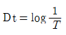
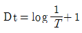
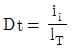
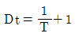
(정답률: 알수없음)
79. 물체 표면의 반사율이 다른 것에 비하여 큰지, 작은지를 판정하는 시지각의 속성을 척도화한 것은?
- 채도
- 색상
- 색지각
- 명도
(정답률: 알수없음)
80. Moon-Spencer는 명도, 채도의 선정도로서 색채조화를 나타내었다. 색채조화 방법이 아닌 것은?
- 일치의 조화
- 유사조화
- 분리조화
- 대비조화
(정답률: 알수없음)
5과목: 인쇄작업론 및 품질관리
81. 인쇄 기계의 형식 중 판통과 압통이 전부 실린더로 되어 인쇄하는 것은?
- 평압식
- 윤전식
- 원압식
- 빅토리아식
(정답률: 알수없음)
82. 인쇄할 때에 품질 관리용으로 사용하는 것과 가장 거리가 먼 것은?
- 컬러컨트롤스트립
- 센시티비티 가이드
- 도트게인 스케일
- 스타 타깃
(정답률: 알수없음)
83. 평압식 인쇄기의 장점은?
- 인쇄 면에 큰 인쇄 압력을 가할 수 있다.
- 단 한번의 동작으로 화상 전체의 인쇄가 가능하다.
- 대형 인쇄기에 적합하다.
- 고속 인쇄기에 적합하다.
(정답률: 알수없음)
84. 스크린 인쇄기 중 장판지와 같이 길이가 긴 인쇄물의 다색인쇄에 가장 적합한 인쇄기는?
- 캐루젤(carousel) 스크린매엽 인쇄기
- 반자동 스크린 인쇄기
- 레버식 수동 스크린 인쇄기
- 로터리 스크린 인쇄기
(정답률: 알수없음)
85. 직화-열풍 병용형 건조 장치와 비교하여 고속열풍 건조장치의 특징을 바르게 설명한 것은?
- 종이가 받는 열의 영향이 크다.
- 종이에 가해지는 온도가 높다.
- 장치가 작고 가격이 싸다.
- 건조 능력의 미세한 조절이 가능하다.
(정답률: 알수없음)
86. 오프셋 인쇄에서 가늠맞춤이 틀릴 때 제판에 의한 원인과 관계가 먼 것은?
- 분해 화상이 잘못된 경우
- 포지티브나 네거티브 촬영에서 틈이 생긴 경우
- 가늠표(register mark) 자체의 신축
- 그리퍼(Gripper) 조절 불량
(정답률: 알수없음)
87. 오프셋 인쇄기에서 회전방향의 화상과 가늠맞춤이 크게 틀릴 때에는 무엇으로 조절하는 것이 가장 바람직한가?
- 압통 기어
- 앞 맞추개
- 판통 기어
- 급지판 테이프
(정답률: 알수없음)
88. 접지부 장치에서 실린더의 홈안에 들어가면서 실린더 표면에 밀착하여 회전하는 종이를 접게 해 일명 실린더 접지라고도 하는 접지 방식은?
- 2중포머 접지
- 나이프 접지
- 포머 접지
- 버클 접지
(정답률: 알수없음)
89. 매엽기와 비교하여 윤전기의 장점이 아닌 것은?
- 인쇄 속도가 빠르다.
- 대량 인쇄시 용지 비용이 싸다.
- 대량 생산에 적합하다.
- 두꺼운 종이의 인쇄가 쉽다.
(정답률: 알수없음)
90. 인쇄기 구성 부분 중 급지부에 속하는 것은?
- 바람대(blast)
- 편심륜
- 습수 롤러
- 스태커(stacker)
(정답률: 알수없음)
91. 조색작업을 할 때의 광원의 색온도와 조도를 바르게 나타낸 것은?
- 색온도 1000± 200K, 조도1200-1500룩스
- 색온도 5000± 200K, 조도1200-2500룩스
- 색온도 3000± 200K, 조도1200-2000룩스
- 색온도 2000± 200K, 조도1200-2500룩스
(정답률: 알수없음)
92. 인쇄판의 형식과 인쇄기의 종류가 바르게 짝지워지지 않은 것은?
- 볼록판 - 플렉소(flexographic) 인쇄기
- 평판 - 오프셋(offset) 인쇄기
- 오목판 - 그라비어(gravure) 인쇄기
- 공판 - 마스터(master) 인쇄기
(정답률: 알수없음)
93. 인쇄기 운전 중 인쇄물의 잉크 농도 변화에 영향을 미치는 것과 가장 관계가 없는 것은?
- 잉크집 안의 잉크량
- 잉크 젓는 속도, 운전속도
- 실내온도, 축임물량
- 인쇄면적, 인쇄매수
(정답률: 알수없음)
94. 다음 중 오프셋(offset) 인쇄의 장점과 가장 거리가 먼 것은?
- 종이 부스러기나 섬유조각에 의한 인쇄불량 문제가 전혀 발생하지 않는다.
- 판의 내쇄성(run length)이 증대된다.
- 표면이 거친 인쇄용지에 대해서도 인쇄성능이 양호한 편이다.
- 판의 화상을 정상(right reading)으로 할 수 있다.
(정답률: 알수없음)
95. 다음 중 오프셋 매엽기에서 사용되는 삽지장치(insertion system)의 작동방식에 해당되지 않는 것은?
- 스윙 그리퍼(swing-arm gripper) 방식
- 체인 그리퍼(chain gripper) 방식
- 로터리 그리퍼(rotary gripper) 방식
- 진공 벨트(vacuum belt) 방식
(정답률: 알수없음)
96. 그라비어 인쇄기에서 독터장치가 하는 역할과 관계가 있는 통은?
- 압통
- 판통
- 습수통
- 블랭킷통
(정답률: 알수없음)
97. 그라비어 인쇄기의 기본 구조와 가장 관계없는 것은?
- 잉크 장치
- 축임 장치
- 건조 장치
- 인압 장치
(정답률: 알수없음)
98. 평판 오프셋 인쇄의 패킹 방법에 대한 설명 중 동경법(equal diameter method)을 바르게 설명한 것은?
- 판통의 지름을 블랭킷통의 지름보다 크게 패킹하여 판의 표면이 베어러 표면보다 높게 한다.
- 판통과 블랭킷통의 표면 속도가 두 실린더의 닙(nip) 입구에서 같아지도록 하는 패킹이다.
- 비압축성 블랭킷에서 발생하는 벌지(bulge) 현상으로 인한 인쇄면에서의 미끄러짐을 고려한 패킹이다.
- 판통과의 접촉 닙(nip)에서 인압에 의하여 블랭킷통의 순간 지름이 줄어드는 효과를 고려한 패킹이다.
(정답률: 알수없음)
99. 다음 중 평판 오프셋 인쇄에서 인쇄물의 건조불량 문제에 대한 대책으로 적절하지 못한 것은?
- 축임물의 pH를 4.0이하로 낮게 유지하여 잉크의 건조를 도와준다.
- 사용 중인 잉크를 인쇄작업의 특성에 가장 적합한 잉크로 교환한다.
- 공기 조절장치를 사용하여 인쇄실의 온도를 21∼25℃정도로 유지한다.
- 환풍기를 사용하여 인쇄기 주위의 공기를 충분히 환기시킨다.
(정답률: 알수없음)
100. 평판 인쇄작업 중에 도트 게인이 얼마나 나타나는지를 측정해 보고 싶다. 도트 게인의 측정은 몇 % 인쇄물의 망점부와 민판부의 반사농도비로 하는 것이 일반적으로 가장 적당한가?
- 15% 정도
- 35% 정도
- 75% 정도
- 95% 정도
(정답률: 알수없음)